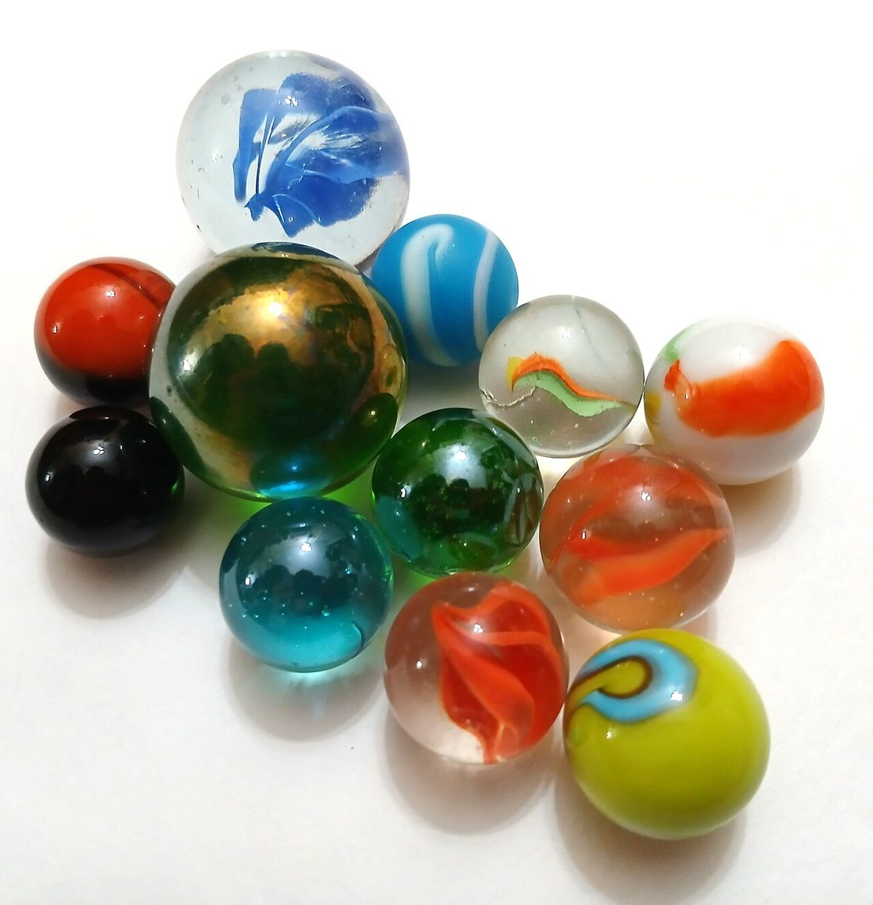
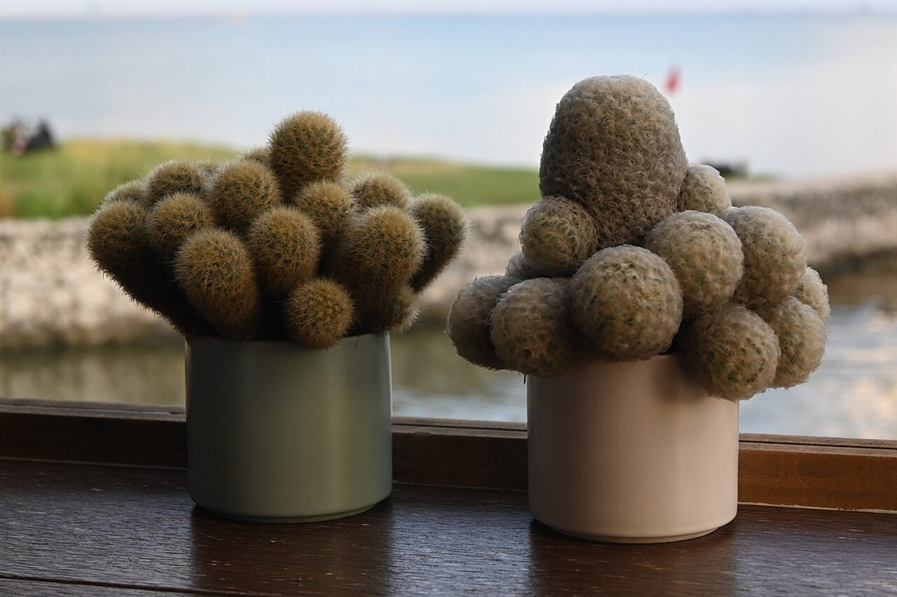

Cafe / 石川県加賀市
Cafe BalChapter
石川県加賀市山中温泉東町にあるカフェ「Cafe Bal Chapter」のご案内ページです。営業時間やメニューなどの詳しいことは準備中。まずはInstagramをのぞいてみてください。

制作側の連想
「Bal」と「Chapter」から、ボールと章を思いついた。
お店の名前の由来は分かりません。制作側は「Bal」の音から丸いボール(球)を、「Chapter」から本の章を連想し、「番号を振った玉」で章を数えるデザインにしました。ビリヤードの玉に似た、番号つきの玉です。お店の理念・由来やメニュー・設備とは無関係で、制作側の連想です。
三角形に並んだ15個の玉のうち、1から5が各ページの章番号です。
丸いもの見本(イメージ)
まるい写真を四つ。
写真はお店のものではなく、国外または撮影地不明のフリー素材のイメージです。加賀市や実際のお店の写真ではなく、提供メニューを示すものでもありません。




ご案内
確認できたことだけ
| 所在地 | 〒922-0114 石川県加賀市山中温泉東町２丁目ツ−６ |
|---|---|
| 電話 | 070-2285-7890 |
| 営業時間 | 準備中 |
| 定休日 | 準備中 |
| ご予約 | 準備中 |
| 駐車場 | 準備中 |
| SNS | Instagram @chapter_cafe.bal |